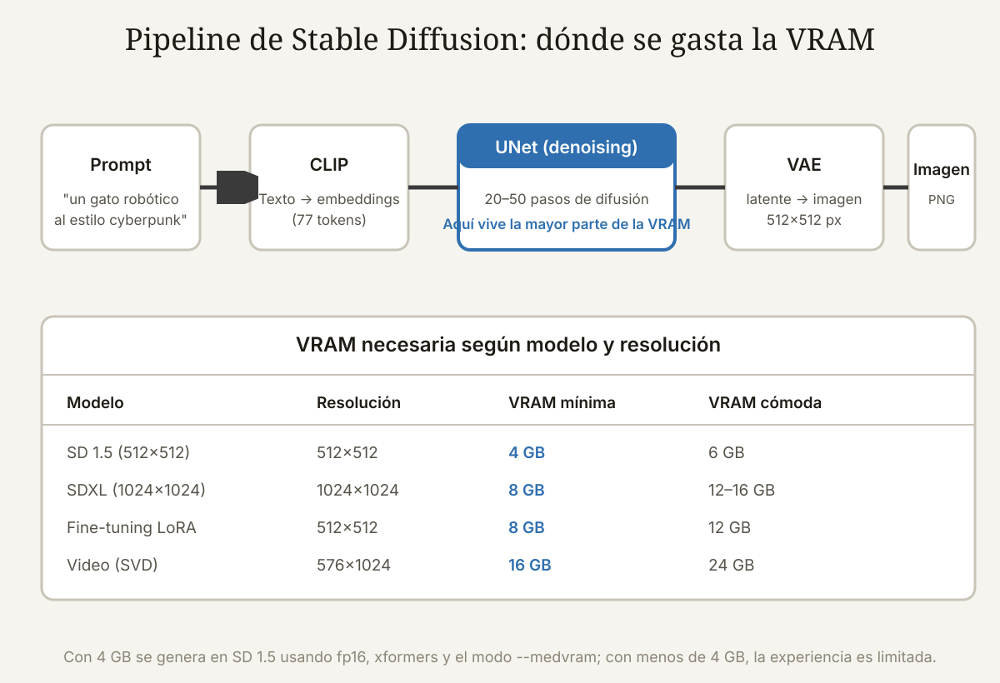

Qué cubre esta guía
- Qué es Stable Diffusion y por qué la GPU manda
- Modelos: SD 1.5, SDXL y sus variantes
- VRAM: el recurso crítico
- GPU NVIDIA: la ruta más fácil
- AMD y Apple Silicon
- ¿Se puede sin GPU? CPU y alternativas
- RAM, disco y el resto del equipo
- Software: Automatic1111, ComfyUI y Fooocus
- Optimizar para poca VRAM
- ¿Local o nube?
- Conclusión
- Preguntas frecuentes
Qué es Stable Diffusion y por qué la GPU manda
Stable Diffusion es un modelo de difusión latente de código abierto: parte de ruido aleatorio y, guiado por un texto (el prompt), elimina el ruido en decenas de pasos hasta formar una imagen. A diferencia de los modelos generativos anteriores, no trabaja directamente sobre píxeles, sino sobre un espacio latente comprimido — de ahí su eficiencia relativa.
El pipeline tiene tres componentes que cargan en memoria:
- CLIP: convierte el texto en "embeddings" numéricos (una red pequeña, unos cientos de MB).
- UNet: la red grande que hace el denoising paso a paso — el mayor consumidor de VRAM, con ~1,7–2,5 GB solo en pesos para SD 1.5, y 5–7 GB para SDXL.
- VAE: decodifica el latente final en píxeles (unos 300–500 MB).
Durante la generación, además de los pesos, la GPU necesita espacio para los activaciones y buffers de cada paso (que crecen con la resolución de la imagen) y para los estados intermedios del optimizador si entrenas. Por eso el requisito de VRAM no es el tamaño del modelo, sino modelo + activaciones + resolución + (si aplica) entrenamiento.
Modelos: SD 1.5, SDXL y sus variantes
Elegir el modelo base es la primera decisión de hardware, porque define el piso de VRAM:
| Modelo | Tamaño de pesos | Resolución nativa | VRAM mínima (generación) | Notas |
|---|---|---|---|---|
| SD 1.5 | ~2 GB (fp16) | 512×512 | 4 GB (optimizado) | El estándar de la comunidad; miles de checkpoints y LoRA |
| SD 2.x | ~2,5 GB | 768×768 | 6 GB | Menos popular en la comunidad |
| SDXL | ~7 GB (fp16) | 1024×1024 | 8 GB (optimizado) | Calidad superior; requiere 8 GB cómodos o 12 para fluidez |
| SD 3.5 / Flux | 7–24 GB | 1024×1024 | 12–24 GB | Modelos nuevos; Flux necesita 16 GB+ cómodos (o cuantizado) |
| Video (SVD, AnimateDiff) | +1–3 GB | 576×1024 | 12–16 GB | El video multiplica la memoria por pasos |
Para decidir el hardware, piensa en el modelo que querrás dentro de un año, no el de hoy. Comprar una GPU con 8 GB hoy te deja en SDXL optimizado; con 12–16 GB tienes margen para SD 3.5 y video; con 4–6 GB, te quedas en SD 1.5 — que sigue siendo increíblemente capaz con los checkpoints y LoRA correctos.
VRAM: el recurso crítico
La VRAM (memoria de la GPU) es el cuello de botella: sin suficiente, la generación se vuelve lenta (el sistema cae a memoria compartida del sistema) o falla con el clásico error CUDA out of memory. Reglas generales por cantidad:
| VRAM | Puedes hacer | Con limitaciones |
|---|---|---|
| 4 GB | SD 1.5 a 512×512 con optimizaciones | Sin SDXL; batch 1; resolución limitada |
| 6 GB | SD 1.5 cómodo, 768×768, LoRA de entrenamiento corto | SDXL solo con mucha optimización y lento |
| 8 GB | SDXL básico con optimizaciones, SD 1.5 a gusto | SDXL sin xformers puede agotarse; entrenamiento limitado |
| 12 GB | SDXL fluido, LoRA de entrenamiento, video corto | Flux completo, no; batch grandes, no |
| 16 GB | SDXL a toda velocidad, Flux cuantizado, video corto | Entrenamiento completo de modelos, no |
| 24 GB | Todo lo anterior + Flux completo + entrenamiento serio | Casi nada, salvo clústeres de investigación |
El salto de 8 GB a 12 GB es el más importante en valor: separa "SDXL optimizado y lento" de "SDXL fluido". El salto de 12 a 16 abre el video; de 16 a 24, el entrenamiento y los modelos nuevos.
GPU NVIDIA: la ruta más fácil
NVIDIA domina la generación local de imágenes porque todo el ecosistema está optimizado para CUDA: PyTorch, xformers, los aceleradores de cada interfaz y la mayoría de los tutoriales asumen una GPU NVIDIA. Cualquier compra debería partir aquí.
| GPU (rango de precio 2026, aprox.) | VRAM | Perfil de uso |
|---|---|---|
| GTX 1650/1660 Super (usada, 100–150 USD) | 4–6 GB | SD 1.5 básico con optimizaciones; entrada |
| RTX 3060 12GB (usada, 200–260 USD) | 12 GB | El rey del presupuesto: SDXL fluido y LoRA |
| RTX 4060 Ti 16GB (nueva, 450–550 USD) | 16 GB | SDXL + video corto sin despeinarse |
| RTX 4070 Super 12GB (nueva, 600–700 USD) | 12 GB | Rápida en SDXL, VRAM justa para video |
| RTX 4080/4090 (nueva, 1.000–2.000 USD) | 16–24 GB | Todo: Flux, video, entrenamiento |
Dos advertencias: la RTX 4060 Ti de 8 GB es una mala compra para IA (la de 16 GB cuesta poco más y duplica la memoria); y evita GPUs con menos de 6 GB para cualquier proyecto futuro. En el mercado de usadas, la RTX 3060 12GB es, con diferencia, la recomendación más repetida del mundo SD.
AMD y Apple Silicon
AMD: desde la versión 2.0 de ROCm, PyTorch soporta oficialmente GPUs AMD (RX 6000/7000 y las profesionales), y las interfaces principales funcionan, pero con tres costos: instalación más frágil (a veces hay que usar el binario de ROCm o compilar), rendimiento típicamente 10–30 % inferior al de una NVIDIA equivalente, y soporte solo en Linux (Windows usa DirectML, más lento y con menos funciones). Para un usuario avanzado, una RX 6700 XT de 12 GB es una alternativa de bajo costo razonable; para el que quiere que "simplemente funcione", NVIDIA sigue ganando.
Apple Silicon (MPS): los Mac con M1/M2/M3/M4 ejecutan Stable Diffusion gracias al backend MPS de PyTorch. La memoria unificada hace que un Mac de 16 GB maneje SDXL que una GPU de 8 GB no tocaría, y los modelos más nuevos funcionan. Las limitaciones: la generación es 2–4× más lenta que una GPU NVIDIA dedicada comparable, y xformers y algunas optimizaciones de NVIDIA no aplican. Para uso ocasional y portabilidad, un Mac de 16 GB es una opción real; para productividad seria, no.
¿Se puede sin GPU? CPU y alternativas
Sí, se puede ejecutar Stable Diffusion en CPU, pero los tiempos son de otro planeta: una imagen SD 1.5 de 512×512 que una GPU moderna hace en 2–5 segundos tarda 1–5 minutos en CPU. Para probar el concepto o generar ocasionalmente, es viable; para uso serio, no. Si no tienes GPU y quieres probar sin instalar nada, hay opciones:
- Google Colab (gratis con límites): genera SD 1.5 y SDXL en GPUs de Google por sesión, sin hardware local.
- Servicios por suscripción o por uso: RunPod, Vast.ai, Fal.ai y similares cobran por hora de GPU (desde 0,20–0,40 USD/hora para RTX 3090/4090 en el mercado de alquiler).
- API de la nube: Stability AI y Replicate ofrecen APIs de pago por imagen.
La regla económica: si generas menos de ~2.000 imágenes al mes, la nube por uso puede ser más barata que comprar una GPU; si generas a diario o entrenas, la GPU local se paga sola.
RAM, disco y el resto del equipo
La VRAM es la estrella, pero el resto del equipo no es gratis:
- RAM del sistema: 16 GB recomendados, 32 GB si entrenas. PyTorch carga el modelo en RAM antes de pasarlo a la GPU y mantiene buffers; con 8 GB verás intercambio a disco y lentitud general.
- Disco: 30–60 GB de espacio libre. Cada checkpoint de SD 1.5 pesa 2–4 GB (los de SDXL, 6–7 GB), y los usuarios serios acumulan decenas; además los modelos VAE, LoRA y los archivos temporales de entrenamiento. Un SSD NVMe acelera la carga inicial del modelo (10–30 s vs. 1–2 min en HDD).
- CPU: cualquiera moderna de 4+ núcleos. No acelera la generación, pero preprocesa (clip skip, tokenización) y evita cuellos de botella en el guardado.
- Fuente de alimentación: las GPU de 12 GB+ piden 500–850 W con su margen; no escatimes en la fuente de una máquina con RTX 4070+.
- Refrigeración: la generación satura la GPU al 100 % durante minutos; una buena disipación evita thermal throttling.
Software: Automatic1111, ComfyUI y Fooocus
El hardware es la mitad; la interfaz define la experiencia:
- Automatic1111 (SD WebUI): la interfaz más popular y la más documentada. Ideal para aprender, con pestañas para generar, entrenar, y miles de extensiones. Algo pesada y con deuda técnica, pero es donde está la comunidad.
- ComfyUI: interfaz por nodos, más empinada al inicio, pero la más eficiente en VRAM (carga y descarga módulos bajo demanda) y la elegida para flujos avanzados y video. Si tu VRAM es justa, ComfyUI saca más partido de la misma tarjeta.
- Fooocus: el "Midjourney local": una sola ventana, prompts simples, parámetros automáticos. Perfecta para empezar sin aprender nada; menos control fino.
Todas soportan los modelos SD 1.5 y SDXL, y todas se instalan con un script en Windows/Linux con Python 3.10+. La instalación de la GPU (drivers CUDA) se valida con python -c "import torch; print(torch.cuda.is_available())" — debe decir True.
Optimizar para poca VRAM
Con 4–6 GB (o una GPU AMD), estas opciones hacen la diferencia entre generar y fallar:
- fp16 (media precisión): a mitad de memoria por pesos, con calidad prácticamente idéntica; se activa con el parámetro
--no-halfdesactivado (por defecto en la mayoría) o--precision fullsi hay artefactos. - xformers: el optimizador de atención más usado; en Automatic1111 se activa con
--xformersy suele recortar 20–40 % de memoria y acelerar. Solo NVIDIA (en AMD se usa--opt-sdp-attention). - Modos de memoria:
--medvram(mueve pesos a RAM entre pasos) y--lowvram(el extremo: funciona con 2–4 GB, lento pero funciona). En ComfyUI estos modos son automáticos. - Reducir resolución y batch: una imagen de 512×512 usa ~2× menos memoria que una de 768×768; batch de 1 como estándar y hi-res fix (upscale en dos pasos) en lugar de generar grande directo.
- Cuantización: modelos cuantizados a 8 bits o 4 bits (con los loaders de ComfyUI o extensiones como BitsandBytes) permiten SDXL en 6 GB y Flux en 8–12 GB a cambio de algo de calidad.
¿Local o nube?
| Criterio | Local | Nube |
|---|---|---|
| Costo inicial | 300–1.500 USD en GPU | 0 (pago por uso) |
| Costo por imagen (volumen alto) | Bajo (electricidad) | 0,01–0,10 USD por imagen típica |
| Privacidad | Total: los prompts no salen de casa | Tus prompts pasan por el proveedor |
| Latencia y control | Total: versiones, extensiones, experimentos | Limitado a la plataforma |
| Mantenimiento | Tuyo (drivers, actualizaciones) | Del proveedor |
La decisión es de uso: generación frecuente, privada o experimental = local; generación ocasional o de producción con demanda variable = nube. Muchos hacen híbrido: una GPU local de gama media para el día a día y nube para los trabajos grandes.
Conclusión
Los requisitos mínimos honestos para Stable Diffusion local se resumen en una línea: una GPU NVIDIA con al menos 8 GB de VRAM y 16 GB de RAM da una experiencia digna con SD 1.5 y SDXL optimizado; 12 GB es el punto dulce (SDXL fluido + LoRA); 16–24 GB abre el video, Flux y el entrenamiento.
Si el presupuesto no alcanza, el camino no es renunciar: SD 1.5 con xformers y --medvram corre en 4–6 GB, y la nube por uso cubre el resto sin invertir en hardware. Lo que no debes hacer es comprar a ciegas: define el modelo objetivo, mira la tabla de VRAM de esta guía y compra la GPU que quede un peldaño por encima de tu necesidad de hoy. El margen se paga solo con la velocidad y la tranquilidad de los próximos años.
Preguntas frecuentes
¿Cuál es el requisito mínimo real para ejecutar Stable Diffusion?
Para generar SD 1.5 a 512×512 con una experiencia usable: una GPU NVIDIA con 6 GB de VRAM (o 4 GB con optimizaciones como xformers y --medvram), 16 GB de RAM y unos 20 GB de disco. Para SDXL a 1024×1024, el mínimo realista son 8 GB de VRAM con optimizaciones y 12 GB para fluidez. Sin GPU, se puede generar en CPU (1–5 minutos por imagen) o usar la nube. Estos mínimos asumen fp16 y las optimizaciones estándar de las interfaces modernas.
¿Sirve una tarjeta de video de 4 GB para Stable Diffusion?
Sí, limitada a SD 1.5 con optimizaciones: con xformers, --medvram (o --lowvram) y resolución 512×512, una GTX 1650/1660 de 4–6 GB genera una imagen en 15–60 segundos. No podrás correr SDXL (falla o va a memoria compartida, con tiempos de minutos), el batch se limita a 1 y el hi-res fix debe ser moderado. Es la puerta de entrada perfecta para probar el mundo SD; si te engancha, el salto a 12 GB es transformador.
¿NVIDIA o AMD para Stable Diffusion en 2026?
NVIDIA sigue siendo la recomendación general: CUDA es el estándar de facto, xformers y la mayoría de las optimizaciones funcionan solo allí, y la instalación es un clic. AMD funciona con ROCm en Linux (y DirectML en Windows con menor rendimiento), con 10–30 % menos rendimiento que NVIDIA equivalente y más fricción de configuración; es una opción válida solo si ya tienes la GPU o el presupuesto la hace irresistible (por ejemplo, una RX 6700 XT de 12 GB usada). En igualdad de precios, NVIDIA gana para IA.
¿Cuánto espacio en disco necesito realmente?
Para empezar, 20–30 GB libres son suficientes: la interfaz (~2 GB), el modelo base SD 1.5 (~2–4 GB) o SDXL (~7 GB), un par de LoRA (~100–300 MB cada uno) y los archivos temporales. El espacio se dispara con el hábito: los usuarios activos acumulan decenas de checkpoints (2–7 GB cada uno), resultados PNG, modelos de entrenamiento y cachés que llenan 100–500 GB. Usa un SSD NVMe para la carga de modelos y la carpeta de resultados; el disco es el componente que más se subestima.
¿Vale la pena generar en la nube en lugar de comprar una GPU?
Depende del volumen y la privacidad. Si generas menos de ~1.500–2.500 imágenes al mes, la nube por uso (RunPod, Vast.ai, Colab) puede costar menos que una GPU de 400–600 USD, sin mantenimiento y con GPUs de gama alta (RTX 4090) por hora. Si generas a diario, entrenas LoRA o trabajas con datos sensibles, la GPU local se paga sola en meses y te da control total. El híbrido — GPU local modesta + nube para picos — es la estrategia más racional para la mayoría.
Este artículo es contenido editorial independiente: no contiene ubicaciones patrocinadas ni enlaces de afiliado. Si en futuras actualizaciones se agregan enlaces a proveedores de componentes, serán identificados explícitamente. El código y las conexiones son referenciales y deben adaptarse y probarse con tu propio hardware. Si detectas un error en esta guía, por favor avísanos.
Sigue aprendiendo
Sigue explorando hardware de computación en Teensy 4.1 vs Arduino Due y descubre qué hacer con el resto del banco de trabajo en la Guía Esencial de Sensores.
Fuentes primarias y lecturas recomendadas
Referencias oficiales del proyecto Stable Diffusion, PyTorch y las interfaces principales. Las cifras de VRAM son orientativas y dependen de la versión de software y del modelo exacto.
- Stability AI — Desarrolladores de Stable Diffusion
- AUTOMATIC1111 — Stable Diffusion WebUI (documentación y requisitos)
- ComfyUI — Interfaz por nodos (documentación oficial)
- PyTorch — Instalación local y soporte CUDA/ROCm/MPS
- Hugging Face — Modelo SDXL base 1.0
- Puget Systems — Guías de hardware para Stable Diffusion
Enlaces revisados: 15 de agosto de 2026.